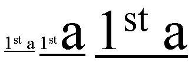
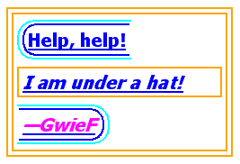

Abstract
This CSS3 module defines properties for text manipulation and
specifies their processing model. It covers line breaking, justification
and alignment, white space handling, text decoration and text
transformation.
Status of This Document
This section describes the status of this document at the time of
its publication. Other documents may supersede this document. A list of
current W3C publications and the latest revision of this technical report
can be found in the W3C technical reports
index at http://www.w3.org/TR/.
Publication as a Working Draft does not imply endorsement by the W3C
Membership. This is a draft document and may be updated, replaced or
obsoleted by other documents at any time. It is inappropriate to cite this
document as other than work in progress.
This CSS module has been produced as a combined effort of the W3C Internationalization Activity,
and the Style Activity and is maintained
by the CSS Working Group. It also
includes contributions made by participants in the XSL Working Group (members
only).
This document was produced by a group operating under the 5 February
2004 W3C Patent Policy. W3C maintains a public list of any patent disclosures made in
connection with the deliverables of the group; that page also includes
instructions for disclosing a patent. An individual who has actual
knowledge of a patent which the individual believes contains Essential
Claim(s) must disclose the information in accordance with section
6 of the W3C Patent Policy.
Feedback on this draft should be posted to the
(archived)
public mailing list www-style@w3.org
(see instructions) with
[css3-text] in the subject line.
You are strongly encouraged to complain if you see something stupid
in this draft. The editors will do their best to respond to all feedback.
If you have implemented properties from the
May 2003
CSS3 Text CR
please let us know so we can take that into account as
we redraft the spec. You can post to
www-style (public),
post to the CSS WG mailing list
(Member-restricted),
or email fantasai directly (personal).
The following features are at risk and may be cut from the spec during
its CR period:
- the 'hanging-punctuation' property
- the ''all'' value of the 'hyphens' property
- the 'hyphenate-limit-*' properties
- the 'hyphenate-resource' property / ''@hyphenate-resource'' at-rule
- the 'text-outline' property
- the 'text-trim' property
- audit draft and add more here
Table of Contents
Introduction
[document here]
A grapheme cluster is what
a language user considers to be a character or a basic unit of the
script. The term is described in detail in the Unicode Technical
Report: Text Boundaries [[!UAX29]]. This specification uses the
extended grapheme cluster definition in [[!UAX29]] (not
the legacy grapheme cluster definition). The UA may further
tailor the definition as allowed by Unicode.
Script Categorization
Typographic behavior varies somewhat by language, but varies drastically
by writing system. For convenience, CSS3 Text defines the following
script categories, which combine typographically-similar scripts together.
- block scripts
- CJK (including Hangul and half-width kana) and by extension all
"wide" characters. (See [[!UAX11]])
- clustered scripts
- South-East Asian scripts that have discrete units but do not
use space between words (such as Thai, Lao, Khmer, Myanmar).
This category also includes the Tibetan script.
- discrete scripts
- Scripts that use spaces or visible word-separating
punctuation between words and have discrete,
unconnected (in print) units within words, such as Latin,
Greek, Ethiopic, Cyrillic, Hebrew.
- cursive scripts
- Arabic and similar cursive scripts.
- connected scripts
- Devanagari, Ogham, and other scripts that use spaces between
words and baseline connectors within words.
By extension this category also includes Gurmukhi, Tamil and any
other Indic scripts whose typographic behavior is similar to
Devanagari.
Provide an appendix using Unicode script names.
These definitions are used primarily in describing
line-breaking and
justification behavior.
Conformance requirements are expressed with a combination of
descriptive assertions and RFC 2119 terminology. The key words “MUST”,
“MUST NOT”, “REQUIRED”, “SHALL”, “SHALL NOT”, “SHOULD”, “SHOULD NOT”,
“RECOMMENDED”, “MAY”, and “OPTIONAL” in the normative parts of this
document are to be interpreted as described in RFC 2119.
However, for readability, these words do not appear in all uppercase
letters in this specification. All of the text of this specification is
normative except sections explicitly marked as non-normative, examples,
and notes. [[!RFC2119]]
Examples in this specification are introduced with the words “for example”
or are set apart from the normative text with class="example",
like this:
This is an example of an informative example.
Informative notes begin with the word “Note” and are set apart from the
normative text with class="note", like this:
Note, this is an informative note.
Conformance to CSS Text Level 3 is defined for three conformance classes:
- style sheet
- A CSS
style sheet.
- renderer
- A UA that interprets the semantics of a style sheet and renders
documents that use them.
- authoring tool
- A UA that writes a style sheet.
A style sheet is conformant to CSS Text Level 3
if all of its declarations that use properties defined in this module
have values that are valid according to the generic CSS grammar and the
individual grammars of each property as given in this module.
A renderer is conformant to CSS Text Level 3
if, in addition to interpreting the style sheet as defined by the
appropriate specifications, it supports all the properties defined
by CSS Text Level 3 by parsing them correctly
and rendering the document accordingly. However, the inability of a
UA to correctly render a document due to limitations of the device
does not make the UA non-conformant. (For example, a UA is not
required to render color on a monochrome monitor.)
An authoring tool is conformant to CSS Text
Level 3 if it writes syntactically correct style sheets, according
to the generic CSS grammar and the individual grammars of each
property in this module.
Partial and Experimental Implementations
UAs must treat as invalid any properties or values they do not support.
Experimental implementations of a feature should support only a
vendor-prefixed syntax for the property/value.
Transforming Text: the 'text-transform' property
| Name: |
text-transform |
| Value: |
none |
[ [ capitalize | uppercase | lowercase ] || fullwidth || fullsize-kana ]
|
| Initial: |
none |
| Applies to: |
all elements |
| Inherited: |
yes |
| Percentages: |
N/A |
| Media: |
visual |
| Computed value: |
as specified |
This property transforms text for styling purposes.
Values have the following meanings:
none- No effects.
capitalize- Puts the first character of each word in titlecase; other characters
are unaffected.
uppercase- Puts all characters in uppercase.
lowercase- Puts all characters in lowercase.
fullwidth- Puts all characters in fullwidth form.
If the character does not have a corresponding fullwidth form,
it is left as is.
This value is typically used to typeset Latin characters and digits
like ideographic characters.
fullsize-kana- Converts all small Kana characters to normal Kana.
This value is typically used for ruby annotation text,
where all small Kana should be drawn as large Kana.
Authors using this for ruby text may also
want to use ''font-variant: ruby''. [[CSS3FONT]]
Although limited, the case mapping process has some language dependencies.
Some well known examples are Turkish and Greek. If the content language
is known then any such language-specific rules must be used.
The case mapping rules for the character repertoire specified by the
Unicode Standard can be found on the Unicode Consortium Web site.
[[!UNICODE]] Only characters belonging to bicameral scripts are
affected.
The definition of "word" used for ''captilize'' is UA-dependent;
[[UAX29]] is suggested (but not required) for determining such word
boundaries. Authors should not expect ''capitalize'' to follow
language-specific titlecasing conventions (such as skipping articles
in English).
The definition of fullwidth and halfwidth forms can be found on the
Unicode consortium web site at [[!UAX11]].
The mapping to fullwidth form is defined by <wide> tag of
Character Decomposition Mapping in [[!UAX44]].
Should all characters be transformed, or only letters
(i.e. not symbols, punctuation, or white space)
Text transformation happens after white
space processing. (This only matters when ''fullwidth'' transforms
U+0020 space characters to U+3000.) This requirement
may need to be relaxed during CR, so mark at-risk.
The following example converts the ASCII characters in abbreviations
in Japanese to their fullwidth variants so that they lay out and line
break like ideographs:
abbr:lang(ja) { text-transform: fullwidth; }
White Space Processing
The source text of a document often contains formatting that
is not relevant to the final rendering: for example, breaking
the source into segments (lines) for ease of editing or adding
white space characters such as tabs and spaces to indent the
source code. CSS white space processing allows the author to
control interpretation of such formatting: to preserve or
collapse it away when rendering the document.
White space processing in CSS interprets white space characters
for rendering: it has no effect on the underlying document data.
In the context of CSS, the document white space set is defined
to be any space characters (Unicode value U+0020), tab characters
(U+0009), and line feeds (U+000A).
However in the document source, segments can be delimited by carriage
returns (U+000D), linefeeds (U+000A) or a combination (U+000D U+000A),
or by some other mechanism, such as the SGML RECORD-START
and RECORD-END tokens. In CSS, each such segment break is treated as
a single line feed character (U+000A).
If no segmentation rules are specified for the document language,
each line feed (U+000A), carriage return (U+000D) and CRLF sequence
(U+000D U+000A) in the text is considered a segment break. (This
default rule also applies to generated content.)
Note that the document parser may have not only normalized
segment breaks, but also collapsed other space characters or
otherwise processed white space according to markup rules. Because CSS
processing occurs after the parsing stage, it is not possible
to restore these characters for styling. Therefore, some of the
behavior specified below can be affected by these limitations and
may be user agent dependent.
Control characters (Unicode class Cc) other than tab (U+0009), line feed
(U+000A), space (U+0020), and the bidi formatting characters (U+202x)
should be rendered as invisible zero-width characters. UAs may instead treat
them as visible characters. (Note, however, that this will usually result in
them being rendered as missing glyphs.)
What's the line-breaking behavior? Assign to alphabetic class?
White Space Collapsing: the 'bikeshedding' property
This section is still under discussion and may change in future drafts.
| Name: |
bikeshedding |
| Value: |
collapse | discard | [ [preserve | preserve-breaks] && [ trim-inner || consume-before || consume-after ] |
| Initial: |
collapse |
| Applies to: |
all elements |
| Inherited: |
yes |
| Percentages: |
N/A |
| Media: |
visual |
| Computed value: |
specified value |
Need a property name
This property declares whether and how
white space inside the element is
collapsed. Values have the following meanings, which must be interpreted
according to the white space processing
rules:
collapse- This value directs user agents to collapse sequences of white space
into a single character (or in some
cases, no character).
preserve- This value prevents user agents from collapsing sequences
of white space. Line feeds are preserved as forced line breaks.
preserve-breaks- This value collapses white space as for ''collapse'', but preserves
line feeds as forced line breaks.
discard- This value directs user agents to "discard" all white space in the
element.
trim-inner- This value directs UAs to discard all whitespace at the beginning of
a block up to and including the last line feed before the first
non-white-space character in the block as well as to discard all white
space at the end of a block starting with the first line feed after
the last non-white-space character in the block.
consume-before- This value directs the UA to collapse all collapsible whitespace
immediately before the start of the element.
consume-after- This value directs the UA to collapse all collapsible whitespace
immediately after the end of the element.
Tab Character Size: the 'tab-size' property
| Name: |
tab-size |
| Value: |
<integer> |
| Initial: |
8 |
| Applies to: |
block containers |
| Inherited: |
yes |
| Percentages: |
N/A |
| Media: |
visual |
| Computed value: |
specified value |
This property determines the width of the tab character (U+0009),
in space characters (U+0020), when rendered. Negative integers are
not allowed.
The White Space Processing Rules
For each inline (including anonymous inlines) within an inline
formatting context, white space characters are handled as follows,
ignoring bidi formatting characters as if they were not there:
If 'bikeshedding'
is set to ''collapse'' or ''preserve-breaks'', white space characters
are considered collapsible and are processed by
performing the following steps:
- All spaces and tabs immediately preceding or following a line
feed character are removed.
- If 'bikeshedding' is not
''preserve-breaks'', line feed characters are transformed for
rendering according to the line
break transformation rules.
- Every tab (U+0009) is converted to a space (U+0020)
- Any space (U+0020) following another collapsible space
(U+0020)—even a space before the inline—is removed.
However, if removing this space would eliminate a line breaking
opportunity in the text, that opportunity is still considered
to exist.
- A collapsible space before the start of an element with
''consume-before'' is removed.
- A collapsible space after the end of an element with
''consume-after'' is removed.
If 'bikeshedding' is set to
''preserve'', any sequence of spaces (U+0020) unbroken by an element
boundary is treated as a sequence of non-breaking spaces. However,
a line breaking opportunity exists at the end of the sequence.
If 'bikeshedding' is set to
''discard'', the first white space character in every white space
sequence is converted to a zero width non-joiner (U+200C) and
the rest of the sequence is removed.
Then, the entire block is rendered. Inlines are laid out, taking bidi
reordering into account, and wrapping as specified by the
'text-wrap' property.
As each line is laid out,
- A sequence of collapsible spaces (U+0020) at the beginning of a
line is removed.
- Each tab (U+0009) is rendered as a horizontal shift that lines up
the start edge of the next glyph with the next tab stop.
Tab stops occur at points that are multiples of the width of a
space (U+0020) rendered in the block's font from the block's
starting content edge. How many spaces is given by the 'tab-size'
property.
- A sequence of collapsible spaces (U+0020) at the end of a line
is removed.
- If spaces (U+0020) or tabs (U+0009) at the end of a line are
non-collapsible but have 'text-wrap' set to 'normal' or 'avoid'
the UA may visually collapse them.
Example of bidirectionality with white space collapsing
Consider the following markup fragment, taking special note of spaces
(with varied backgrounds and borders for emphasis and identification):
<ltr>A <rtl> B </rtl> C</ltr>
where the <ltr> element represents a left-to-right
embedding and the <rtl> element represents a
right-to-left embedding. If the 'bikeshedding' property is set
to ''collapse'', the above processing model would result in the
following:
- The space before the B ( )
would collapse with the space after the A ( ).
- The space before the C ( )
would collapse with the space after the B ( ).
This would leave two spaces, one after the A in the left-to-right
embedding level, and one after the B in the right-to-left embedding
level. This is then ordered according to the Unicode bidirectional
algorithm, with the end result being:
A BC
Note that there are two spaces between A and B, and none between B
and C. This is best avoided by putting spaces outside the element
instead of just inside the opening and closing tags and, where
practical, by relying on implicit bidirectionality instead of explicit
embedding levels.
When line feeds are collapsible, they are
either transformed into a space (U+0020) or removed depending on the
script context before and after the line break.
Note that the white space processing rules have already
removed any tabs and spaces after the line feed before these checks
take place.
- If the character immediately before or immediately after the line
feed is the zero width space character (U+200B), then the line feed
is removed.
- Otherwise, if the script context on one side of the line feed is
Hangul, then the line feed is converted to a space (U+0020).
- Otherwise, if the East Asian Width property [[!UAX11]] of both
the character before and after the line feed is F, W, or H (not A),
then the line feed is removed.
- Otherwise, if 'text-autospace' property is set to add extra spaces
for the combination of the character before the line feed and after,
then the line break is removed.
- Otherwise, the line feed is converted to a space (U+0020).
Comments on how well this would work in practice would
be very much appreciated, particularly from people who work with
Thai and similar scripts.
Informative Summary of White Space Collapsing Effects
- Consecutive white space collapses into a single space.
- A sequence of newlines and other white space between
two ideographic characters collapses into nothing unless
there is a space before the first newline in the sequence.
- A zero width space within a white space sequence containing
a newline causes the entire sequence of white space
to collapse into a zero width space.
White Space and Text Wrapping Shorthand: the 'white-space' property
| Name: |
white-space |
| Value: |
normal | pre | nowrap | pre-wrap | pre-line |
| Initial: |
not defined for shorthand properties |
| Applies to: |
all elements |
| Inherited: |
yes |
| Percentages: |
N/A |
| Media: |
visual |
| Computed value: |
see individual properties |
The 'white-space' property is a shorthand for the
'bikeshedding' and 'text-wrap' properties.
Not all combinations are represented.
Values have the following meanings:
normal- Sets 'bikeshedding' to ''collapse'' and
'text-wrap' to ''normal''
pre- Sets 'bikeshedding' to ''preserve'' and
'text-wrap' to ''none''
nowrap- Sets 'bikeshedding' to ''collapse'' and
'text-wrap' to ''none''
pre-wrap- Sets 'bikeshedding' to ''preserve'' and
'text-wrap' to ''normal''
pre-line- Sets 'bikeshedding' to ''preserve-breaks'' and
'text-wrap' to ''normal''
The following informative table summarizes the behavior of various
'white-space' values:
|
New Lines |
Spaces and Tabs |
Text Wrapping |
| normal |
Collapse |
Collapse |
Wrap |
| pre |
Preserve |
Preserve |
No wrap |
| nowrap |
Collapse |
Collapse |
No wrap |
| pre-wrap |
Preserve |
Preserve |
Wrap |
| pre-line |
Preserve |
Collapse |
Wrap |
Line Breaking and Word Boundaries
In most writing systems, in the absence of hyphenation a line break occurs
only at word boundaries. Many writing systems use spaces or
punctuation to explicitly separate words, and line break opportunities
can be identified by these characters. Scripts such as Thai, Lao, and
Khmer, however, do not use spaces or punctuation to separate words.
Although the zero width space (U+200B) can be used as an explicit word
delimiter in these scripts, this practice is not common. As a result,
a lexical resource is needed to correctly identify break points in such
texts.
In several other writing systems, (including Chinese, Japanese, Yi,
and sometimes also Korean) a line break opportunity is based on
character boundaries, not word boundaries. In these systems a line can break
anywhere except between certain character combinations.
Additionally the level of strictness in these restrictions can vary
with the typesetting style.
CSS does not fully define where line breaking opportunities occur,
however some controls are provided to distinguish common variations.
Further information on line breaking conventions can be
found in
[[JIS4051]] for Japanese,
[[ZHMARK]] for Chinese, and [?] for Korean, and
in [[!UAX14]] for all scripts in Unicode.
Any guidance for appropriate references here would be
much appreciated.
Information on line-breaking in the absence of dictionaries:
for Thai
Floated and absolutely-positioned elements do not introduce a line
breaking opportunity. The line breaking behavior of a replaced element
is equivalent to that of a Latin character.
It is not clear whether this section handles Southeast Asian
scripts well. Additionally, some guidance should be provided on how to
break or not break Southeast Asian in the absence of a dictionary.
Line Breaking Strictness: the 'line-break' property
| Name: |
line-break |
| Value: |
auto | loose | normal | strict |
| Initial: |
auto |
| Applies to: |
all elements |
| Inherited: |
yes |
| Percentages: |
N/A |
| Media: |
visual |
| Computed value: |
specified value |
This property specifies the strictness of line-breaking rules applied
within an element: particularly how line-breaking interacts with
punctuation. Values have the following meanings:
auto- The UA determines the set of line-breaking restrictions to use,
and it may vary the restrictions based on the length of the line; e.g.,
use a less restrictive set of line-break rules for short lines.
loose- Breaks text using the least restrictive set of line-breaking
rules. Typically used for short lines, such as in newspapers.
normal- Breaks text using the most common set of line-breaking rules.
strict- Breaks text using the most stringent set of line-breaking
rules.
CSS distinguishes between three levels of strictness in the rules for
implicit line breaking. The precise set of rules in effect for each
level is up to the UA and should follow language conventions. However,
this specification does recommend that:
- Following breaks be forbidden in ''strict'' line breaking and
allowed in ''normal'':
- breaks before Japanese small kana
- breaks before the KATAKANA-HIRAGANA PROLONGED SOUND MARK (U+30FC)
Additionally, if the language is known to be Chinese or Japanese,
breaks before hyphens (U+2010, U+2013, U+301C, U+30A0) may be allowed
in ''normal''.
- Following breaks be forbidden in ''normal'' and ''strict'' line
breaking and allowed in ''loose'':
- breaks before iteration marks (U+3005, U+303B, U+309D, U+309E, U+30FD, U+30FE)
- breaks between inseparatable characters (U+2014, U+2025, U+2026, U+3033, U+3034, U+3035)
If the language is known to be Chinese or Japanese, then additionally
the following breaks may be allowed in ''loose'':
- breaks before middle dots (U+003A, U+003B, U+30FB, U+FF1A, U+FF1B, U+FF65)
- breaks before dividing punctuation marks (U+0021, U+003F, U+203C, U+2047, U+2048, U+2049, U+FF01, U+FF1F)
- breaks before postfixes (U+0025, U+00A2, U+00B0, U+2030, U+2032, U+2033, U+2103, U+FF05, U+FFE0)
- breaks after prefixes (U+0024, U+00A3, U+00A5, U+20AC, U+2116, U+FF04, U+FFE1, U+FFE5)
Support for this property is optional. It is recommended
for UAs that wish to support CJK typography and strongly recommended
for UAs in the Japanese market.
Word Breaking Rules: the 'word-break' property
| Name: |
word-break |
| Value: |
normal | keep-all | break-all | keep-words |
| Initial: |
normal |
| Applies to: |
all elements |
| Inherited: |
yes |
| Percentages: |
N/A |
| Media: |
visual |
| Computed value: |
specified value |
This property specifies line break opportunities within words.
Values have the following meanings:
normal- Break lines according to their usual rules.
break-all- Lines may break between any two grapheme clusters within words.
Hyphenation is not applied. This option is used mostly in a context where
the text is predominantly using CJK characters with few non-CJK excerpts
and it is desired that the text be better distributed on each line.
keep-all- Block characters can no longer create
implied break points. Otherwise this option is equivalent to
''normal''.
This option is mostly used where the presence of word separator
characters still creates line-breaking opportunities, as in Korean.
When shaping scripts such as Arabic are allowed to break within words
due to ''break-all'', the characters must still be shaped as if the
word were not broken.
Hyphenation
Hyphenation allows the controlled splitting of words to improve the
layout of paragraphs. CSS3 Text does not define the exact rules for
hyphenation, but defines six properties and an at-rule that influence
hyphenation.
Whether hyphenation is applied can controlled with the 'hyphens' property.
The following author controls are not required to be supported for
the UA to claim conformance to CSS Text Level 3:
- 'hyphenate-limit-zone'
- 'hyphenate-limit-chars'
- 'hyphenate-limit-lines'
- 'hyphenate-resources'
- ''@hyphenate-resource''
Nonetheless, UAs are strongly encouraged to optimize their line-breaking
implementation to choose good break points and appropriate hyphenation
points.
These controls are optional because for a low-end
implementation of hyphenation, they are not critical enough; and for
a high-end implementation of paragraph breaking (such as in
Teχ) they are not
considered especially useful.
Hyphenation Control: the 'hyphens' property
| Name:
| hyphens
|
| Value:
| none | manual | auto | all
|
| Initial:
| manual
|
| Applies to:
| all elements
|
| Inherited:
| yes
|
| Percentages:
| N/A
|
| Media:
| visual
|
| Computed value:
| specified value
|
This property controls whether hyphenation is allowed to create more
break opportunities within a line of text. Values have the following
meanings:
- none
- Words are not broken at line breaks, even if characters inside
the word suggest line break points.
- manual
- Words are only broken at line breaks where there are characters
inside the word that suggest line break opportunities. Characters
can be explicit or conditional.
In Unicode, U+00AD is a conditional "soft hyphen" and U+2010 is an
explicit hyphen. Unicode Standard Annex #14 describes the
role of soft hyphens in
Unicode line breaking. [[!UAX14]]
In HTML, ­ represents the soft hyphen character which
suggests a line break opportunity.
ex­ample
- auto
- Words can be broken at appropriate hyphenation points either as
determined by hyphenation characters inside the word or as
determined automatically by a language-appropriate hyphenation
resource (such as those provided via ''@hyphenation-resource'').
Explicit hyphenation characters inside a word take priority over
automatic resources when determining hyphenation points within
the word.
- all
- All possible hyphenation points, as would be determined for ''auto'',
are marked. The visual appearance of the mark is UA-dependent. This
value is intended for debugging. Do we really need
this value?
Correct automatic hyphenation requires a hyphenation resource
appropriate to the language of the text being broken. The UA is
therefore only required to automatically hyphenate text for which
the author has declared a language (e.g. via HTML lang
or XML xml:lang) and for which it has an appropriate
hyphenation resource.
When shaping scripts such as Arabic are allowed to break within words
due to hyphenation, the characters must still be shaped as if the word
were not broken.
Hyphens: the 'hyphenate-character' property
| Name:
| hyphenate-character
|
| Value:
| auto | <string>
|
| Initial:
| auto
|
| Applies to:
| all elements
|
| Inherited:
| yes
|
| Percentages:
| N/A
|
| Media:
| visual
|
| Computed value:
| specified value
|
This property specifies strings that are shown between parts of
hyphenated words. The 'auto' value means that the user agent should
find an appropriate value. If a string is specified, it appears at
the end of the line before a hyphenation break.
In Latin scripts, the hyphen character (U+2010) is often used to
indicate that a word has been split. Normally, it will not be
necessary to set it explicitly. However, this can easily be done:
article { hyphenate-character: "\2010" }
Can we to CLDR for hyphenation character data?
Hyphenation Size Limit: the 'hyphenate-limit-zone' property
| Name:
| hyphenate-limit-zone
|
| Value:
| <percentage> | <length>
|
| Initial:
| 0
|
| Applies to:
| block containers
|
| Inherited:
| yes
|
| Percentages:
| refers to width of the line box
|
| Media:
| visual
|
| Computed value:
| specified value
|
Is 'hyphenate-limit-zone' a good name? Comments/suggestions?
This property specifies the maximum amount of unfilled space (before
justification) that may be left in the line box before hyphenation is
triggered to pull part of a word from the next line back up into the
current line.
Hyphenation Character Limits: the 'hyphenate-limit-word' property
| Name:
| hyphenate-limit-chars
|
| Value:
| auto | <integer>{1,3}
|
| Initial:
| auto
|
| Applies to:
| all elements
|
| Inherited:
| yes
|
| Percentages:
| N/A
|
| Media:
| visual
|
| Computed value:
| specified value
|
This property specifies the minimum number of characters in a
hyphenated word. If the word does not meet the required minimum
number of characters in the word / before the hyphen / after the
hyphen, then the word must not be hyphenated. Nonspacing combining
marks (Unicode class) and intra-word
punctuation (Unicode classes P*) do not count towards the minimum.
If three values are specified, the first value is the required
minimum for the total characters in a word, the second value is
the minimum for characters before the hyphenation point, and
the third value is the minimum for characters after the hyphenation
point. If the third value is missing, it is the same as the second.
If the second value is missing, then it is ''auto''. The ''auto''
value means that the UA chooses a value that adapts to the current
layout.
Unless the UA is able to calculate a better value, it
is suggested that ''auto'' means 2 for before and after, and 5 for
the word total.
In the example below, the minimum size of a hyphenated word is
left to the UA (which means it may vary depending on the language,
the length of the line, or other factors), but the minimum number
of characters before and after the hyphenation point is set to 3.
p { hyphenate-limit-chars: auto 3; }
Hyphenation Line Limits: the 'hyphenate-limit-lines' and 'hyphenate-limit-last' properties
| Name:
| hyphenate-limit-lines
|
| Value:
| no-limit | <integer>
|
| Initial:
| no-limit
|
| Applies to:
| block containers
|
| Inherited:
| yes
|
| Percentages:
| N/A
|
| Media:
| visual
|
| Computed value:
| specified value
|
This property indicates the maximum number of successive hyphenated
lines in an element. The ''no-limit'' value means that there is no limit.
In some cases, user agents may not be able to honor the specified value.
(See 'word-wrap'.) It is not defined whether hyphenation introduced by
such emergency breaking influences nearby hyphenation points.
| Name:
| hyphenate-limit-last
|
| Value:
| none | always | column | page | spread
|
| Initial:
| none
|
| Applies to:
| block containers
|
| Inherited:
| yes
|
| Percentages:
| N/A
|
| Media:
| visual
|
| Computed value:
| specified value
|
This property indicates hyphenation behavior at the end of elements,
column, pages and spreads. A spread is a set of two pages that are
visible to the reader at the same time. Values are:
- ''none''
- No restrictions imposed.
- ''always''
- The last full line of the element, or the last line before any
column, page, or spread break inside the element should not be
hyphenated.
- ''column''
- The last line before any column, page, or spread break inside
the element should not be hyphenated.
- ''page''
- The last line before page or spread break inside the element
should not be hyphenated.
- ''spread''
- The last line before any spread break inside the element should
not be hyphenated.
p { hyphenate-limit-last: always }
div.chapter { hyphenate-limit-last: spread }
A paragraph may be formatted like this when 'hyphenate-limit-last: none' is set:
This is just a
simple example
to show Antarc-
tica.
With 'hyphenate-limit-last: always' one would get:
This is just a
simple example
to show
Antarctica.
Hyphenation Resources
The ''@hyphenate-resource'' rule
ISSUE: this ''@hyphenate-resource'' at-rule is a proposal that would replace
the 'hyphenate-resource' property.
- advantages of ''@hyphenate-resource''
- Minimal data storage (set per-language, not per-element).
- Requires language-tagging, which also enables the correct use
of local dictionaries (and can also trigger other typographic
improvements).
- Can use RFC4647 language-mapping, which is more intelligent
than :lang()'s prefix-matching. (Could also argue that :lang()
should use RFC4647.)
- disadvantages of ''@hyphenate-resource''
- Requires language-tagging; cannot select on any other criteria.
Variations in hyphenation rules within the same language in a given
document will require use of subtags.
- advantages of 'hyphenate-resource'
- Can use any selector, not just language-mapping.
- Implemented in Prince.
- disadvantages of 'hyphenate-resource'
- Requires per-element data storage.
Feedback on this issue is requested.
The ''@hyphenate-resource'' at-rule
allows the author to specify hyphenation resources that the UA
may use to help it hyphenate text correctly.
The ''@hyphenate-resource'' rule consists of the ''@hyphenate-resource''
at-keyword followed by a hyphenation mapping declaration block, which
has the same syntax as a declaration block, except that the properties
are language codes and the property values are comma-separated lists
of <url> component values indicating the location of
author-suggested hyphenation resources ordered from most to least
preferred.
The keyword value ''local'' may be used in place of one of the
<url> values to suggest the use of a local (UA-provided)
hyphenation resource. If the ''local'' value is missing, it is
assumed to be the first (most-preferred) resource in the list.
The hyphenation resource list that applies to the text in an element
is the one given by the last hyphenation mapping declaration whose
language code matches the language of the element.
Language code matching must be performed using RFC4647 [[!RFC4647]]
explain exactly how.
Since the last matching declaration takes effect,
authors should list the most general mapping first, and the most
specific last. Note also that declarations are not concatenated,
so if multiple dictionaries are needed, they must be listed
completely in each declaration.
@hyphenate-resource {
/* English */
en: url(en-GB.hy);
en-US: url(en-US.hy);
en-x-hixie: url(hixie.hy), local, url(en-GB.hy);
en-US-x-hixie: url(hixie.hy), local, url(en-US.hy);
/* français */
fr: url(fr.hy);
}
In the example above, the ''en-x-hixie'' rule is used for both
''en-x-hixie'' and ''en-GB-x-hixie''. It is not used for
''en-US-x-hixie'' because the ''en-US-x-hixie'' rule is given
last. If the order were reversed, the ''en-US-x-hixie'' rule
would never be used.
Use a format specifier, like @font-face? What is the format?
UAs are not required to support this at-rule.
The 'hyphenate-resource' property
| Name:
| hyphenate-resource
|
| Value:
| none | <uri> [, <uri> ]*
|
| Initial:
| none
|
| Applies to:
| all elements
|
| Inherited:
| yes
|
| Percentages:
| N/A
|
| Media:
| visual
|
| Computed value:
| specified value
|
This property specifies a comma-separated list of external resources
that can help the UA determine hyphenation points. If more than one
resource is specified, the UA should consult each resource –
in turn, from the beginning – until it finds one that is able to
determine hyphenation points in a word. The 'none' value indicates that
no external resources are available. In any case, the UA can also use
local resources not listed on this property.
Often, finding the right hyphenate resource is based on knowing the
language of the text. The lang attribute is recommended
for encoding the language, and the corresponding selector is used in
this example:
:lang(dk) { hyphenate-resource: url("hyph_da_DK.dic"), url("hyph_da_NO.dic") }
UAs are not required to support this property.
Use a format specifier, like @font-face? What is the format?
Text Wrapping
Text wrapping is controlled by the 'text-wrap' and 'word-wrap' properties:
Text Wrap Settings: the 'text-wrap' property
| Name: |
text-wrap |
| Value: |
normal | none | avoid |
| Initial: |
normal |
| Applies to: |
all elements |
| Inherited: |
yes |
| Percentages: |
N/A |
| Media: |
visual |
| Computed value: |
specified value |
This property specifies the mode for text wrapping. Possible values:
normal- Lines may break at allowed break points, as determined by the
line-breaking rules in effect. Line breaking behavior defined
for the WJ, ZW, and GL line-breaking classes in
[[!UAX14]] must be honored.
none- Lines may not break; text that does not fit within the block container
overflows it.
avoid- Line breaking is suppressed within the element: the UA may only break
within the element if there are no other valid break points in the
line. If the text breaks, line-breaking restrictions are honored as for
'normal'.
Regardless of the 'text-wrap' value, lines always break at forced breaks:
for all values, line-breaking behavior defined for the BK, CR, LF, CM
NL, and SG line breaking classes in [[!UAX14]] must
be honored.
When 'text-wrap' is set to 'normal' or
'avoid', UAs that allow breaks at punctuation other than spaces
should prioritize breakpoints.
For example, if breaks after slashes have a lower priority than spaces,
the sequence "check /etc" will never break between the '/' and the 'e'.
The UA may use the width of the containing block, the text's language,
and other factors in assigning priorities.
As long as care is taken to avoid such awkward breaks, allowing breaks at
appropriate punctuation other than spaces is recommended, as it results
in more even-looking margins, particularly in narrow measures.
Example of using 'text-wrap: avoid' in presenting a footer
The priority of breakpoints can be set to reflect the intended
grouping of text.
Given the rules
footer { text-wrap: avoid; /* inherits to all descendants */ }
and the following markup:
<footer>
<venue>27th Internationalization and Unicode Conference</venue>
• <date>April 7, 2005</date> •
<place>Berlin, Germany</place>
</footer>
In a narrow window the footer could be broken as
27th Internationalization and Unicode Conference •
April 7, 2005 • Berlin, Germany
or in a narrower window as
27th Internationalization and Unicode
Conference • April 7, 2005 •
Berlin, Germany
but not as
27th Internationalization and Unicode Conference • April
7, 2005 • Berlin, Germany
Emergency Wrapping: the 'word-wrap' property
| Name: |
word-wrap |
| Value: |
normal | [ break-word || hyphenate ] |
| Initial: |
normal |
| Applies to: |
all elements |
| Inherited: |
yes |
| Percentages: |
N/A |
| Media: |
visual |
| Computed value: |
specified value |
This property specifies whether the UA may break within a word
to prevent overflow when an otherwise-unbreakable string is too
long to fit within the line box. It only has an effect when
'text-wrap' is either 'normal' or 'avoid'. Possible values:
normal- Lines may break only at allowed break points. However, the restrictions
introduced by ''word-break: keep-all'' may be relaxed to match
''word-break: normal'' and the various hyphenation limit properties
may be ignored if there are no otherwise-acceptable break points in
the line.
hyphenate- An unbreakable "word" may be hyphenated if there are no
otherwise-acceptable break points in the line even if hyphenation is
turned off. Hyphenation controls may influence where the word breaks,
but cannot forbid the word from hyphenating to prevent overflow.
break-word- An unbreakable "word" may be broken at an arbitrary point if
there are no otherwise-acceptable break points in the line.
Shaping characters are still shaped as if the word were not
broken, and grapheme clusters must together stay as one unit.
If specified together with ''hyphenate'', valid hyphenation
takes precedence over ''break-word'' breaking.
This property should have been called 'emergency-wrap',
however due to historical reasons it could not be given a less
confusing name.
Alignment and Justification
Text Alignment: the 'text-align' property
| Name: |
text-align |
| Value: |
[ start | <string> ]?
[ start | end | left | right | center | justify | match-parent ]
|
| Initial: |
start |
| Applies to: |
block containers |
| Inherited: |
yes |
| Percentages: |
N/A |
| Media: |
visual |
| Computed value: |
specified value, except for 'match-parent' (see prose) |
This property describes how inline contents of a block are horizontally aligned
if the contents do not completely fill the line box. Values have the following
meanings:
start- The inline contents are aligned to the start edge of the line box.
end- The inline contents are aligned to the end edge of the line box.
left- The inline contents are aligned to the left edge of the line box.
In vertical text, 'left' aligns to the edge of the line box that
would be the start edge for left-to-right text.
right- The inline contents are aligned to the right edge of the line box.
In vertical text, 'right' aligns to the edge of the line box that
would be the end edge for left-to-right text.
center- The inline contents are centered within the line box.
justify- The text is justified according to the method specified by the
'text-justify' property.
<string>- The string must be a single character; otherwise the declaration must
be ignored.
When applied to a table cell, specifies the alignment character
around which the cell's contents will align. See
below for further details.
match-parent- This value behaves the same as 'inherit' except that an inherited
'start' or 'end' keyword is calculated against its parent's 'direction'
value and results in a computed value of either 'left' or 'right'.
If two keywords are given in combination, then the first value specifies
the alignment of the first line and any line immediately after a forced
line break; and the second value specifies the alignment of any remaining
lines.
A block of text is a stack of
line boxes.
In the case of 'start', 'end', 'left', 'right' and 'center', this
property specifies how the inline-level boxes within each line box align
with respect to the start and end sides of the line box: alignment is not
with respect to the
viewport
or containing block.
In the case of 'justify', the UA may stretch or shrink any inline boxes
by adjusting their text in addition to
shifting their positions. (See also 'text-justify', 'letter-spacing', and
'word-spacing'.)
If an element's white space is set to be collapsible,
then the UA is not required to adjust its text for the purpose of
justification and may instead treat the text as having no expansion
opportunities. If the UA chooses to adjust the text, then it must ensure
that tab stops continue to line up as required by the
white
space processing rules.
Details on Character-based Alignment in a Table Column
When multiple cells in a column have an alignment character specified,
the alignment character of each such cell in the column is centered along
a single column-parallel axis and the rest of the text in the column
shifted accordingly. (Note that the strings do not have to be the same
for each cell, although they usually are.)
If the alignment character appears more than once in the text, the first
instance is used for alignment. If the alignment character does not appear
in a cell at all, the string is aligned as if the alignment character had
been inserted at the end of its contents.
Character-based alignment occurs before table cell width computation so
that auto width computations can leave enough space for alignment.
Whether column-spanning cells participate in the alignment prior to
or after width computation is undefined.
If width constraints on the cell contents prevent full alignment
throughout the column, the resulting alignment is undefined.
A keyword value may be specified in conjunction with the <string>
value; if it is not given, it defaults to ''right''. This value is used:
- when character-based alignment is applied to boxes that are not table
cells.
- when the text wraps to multiple lines (at unforced break points).
- when the column is wide enough that the character alignment alone does
not determine the positions of its character-aligned contents. In this
case the keyword alignment of the first cell in the column with a
specified alignment character is used to slide the position of the
character-aligned contents to match the keyword alignment insofar as
possible without changing the width of the column.
For ''center'', the UA may center
the aligned contents using its extremes, center the alignment axis
itself (insofar as possible), or optically center the aligned contents
some other way (such as by taking a weighted average of the extent of
the cells' contents to either side of the axis).
- when a character-aligned cell spans more than one column. In this
case the keyword alignment value is used to determine which column's
axis to align with: the leftmost column for ''left'', the rightmost
column for ''right'' and ''center'', the startmost column for ''start'',
the endmost column for ''end''.
The following style sheet:
TD { text-align: "." center }
will cause the column of dollar figures in the following HTML table:
<TABLE>
<COL width="40">
<TR> <TH>Long distance calls
<TR> <TD> $1.30
<TR> <TD> $2.50
<TR> <TD> $10.80
<TR> <TD> $111.01
<TR> <TD> $85.
<TR> <TD> N/A
<TR> <TD> $.05
<TR> <TD> $.06
</TABLE>
to align along the decimal point. The table might be rendered as
follows:
+---------------------+
| Long distance calls |
+---------------------+
| $11.30 |
| $22.50 |
| $0.80 |
| $200567.01 |
| $85. |
| N/A |
| $.05 |
| $.06 |
+---------------------+
Right alignment is used by default for character-based
alignment because numbering systems are almost all left-to-right even
in right-to-left writing systems, and the primary use case of
character-based alignment is for numerical alignment.
Last Line Alignment: the 'text-align-last' property
| Name: |
text-align-last |
| Value: |
auto | start | end | left | right | center | justify
|
| Initial: |
auto |
| Applies to: |
block containers |
| Inherited: |
yes |
| Percentages: |
N/A |
| Media: |
visual |
| Computed value: |
specified value |
This property describes how the last line of a block or a line
right before a forced line break is aligned. If a line is also
the first line of the block or the first line after a forced line
break, then 'text-align-last' takes precedence over 'text-align'
except when two keywords are given for 'text-align'
(i.e. when 'text-align' assigns an explicit first line alignment).
''auto'' is
equivalent to the value of the 'text-align' property except when
'text-align' is set to ''justify'', in which case it is ''justify''
when 'text-justify' is ''distribute'' and ''start'' otherwise.
All other values have the same meanings as in 'text-align'.
Justification Method: the 'text-justify' property
| Name: |
text-justify |
| Value: |
auto | none |
inter-word | inter-ideograph | inter-cluster | distribute | kashida
|
| Initial: |
auto |
| Applies to: |
block containers and, optionally, inline elements |
| Inherited: |
yes |
| Percentages: |
N/A |
| Media: |
visual |
| Computed value: |
specified value |
This property selects the justification method used when a line's
alignment is set to ''justify''. (See 'text-align'.)
The property applies to block containers, but the UA may (but
is not required to) also support it on inline elements.
It takes the following values:
auto- The UA determines the justification algorithm to follow, based
on a balance between performance and adequate presentation quality.
One possible algorithm is to determine the behavior
based on the language of the paragraph: the UA can then choose
appropriate value for the language, like ''inter-ideograph''
for CJK, or ''inter-word'' for English.
Another possibility is to use a justification method that is a
universal compromise for all scripts, e.g. the ''inter-cluster''
method with block scripts raised to first priority.
none- Justification is disabled.
This value is intended for use in user stylesheets
to improve readability or for accessibility purposes.
inter-word- Justification primarily changes spacing at word separators.
This value is typically used for languages that separate words using
spaces, like English or (sometimes) Korean.
inter-ideograph- Justification primarily changes spacing at word separators and
at inter-graphemic boundaries in scripts that use no word spaces.
This value is typically used for CJK
languages.
inter-cluster- Justification primarily changes spacing at word separators and at
grapheme cluster boundaries in clustered
scripts.
This value is typically used for Southeast Asian scripts such as Thai.
distribute- Justification primarily changes spacing both at word separators
and at grapheme cluster boundaries in all scripts except those in
the connected and cursive categories.
This value is sometimes used in e.g. Japanese.
-
kashida
- Justification primarily stretches
cursive scripts through the use of
kashida or other calligraphic elongation.
When justifying text, the user agent takes the remaining space between
the ends of a line's contents and the edges of its line box, and
distributes that space throughout its contents so that the contents
exactly fill the line box. If the 'letter-spacing' and 'word-spacing'
property values allow it, the user agent may also distribute negative
space, putting more content on the line than would otherwise fit under
normal spacing conditions. The exact justification algorithm is
UA-dependent; however, CSS provides some general guidelines which should
be followed when any justification method other than 'auto' is
specified.
CSS defines expansion opportunities
as points where the justification algorithm may alter spacing within
the text. These expansion opportunities fall into priority
levels as defined by the justification method.
Within a line, higher priority expansion opportunities should be
expanded or compressed to their limits before lower priority
expansion opportunities are adjusted. (Expansion and compression
limits are given by the letter-spacing
and word-spacing properties.)
How any remaining space is distributed once all expansion opportunities
reach their limits is up to the UA. If the inline contents of a line
cannot be stretched to the full width of the line box, then they must be
aligned as specified by the 'text-align-last' property. (If
'text-align-last' is ''justify'', then they must be aligned as for
''center'' if 'text-justify' is ''distribute'' and as ''start''
otherwise.)
The expansion opportunity priorities for values of 'text-justify'
are given in the table below. Space must be distributed evenly
among all types of expansion opportunities in a given prioritization
group, but may vary within a line due to changes in the font or
letter-spacing and word-spacing values. Since justification behavior
varies by writing system, expansion opportunities are organized by
script categories. The different types of
expansion opportunities are defined as follows:
- spaces
- An expansion opportunity exists at spaces and other
word separators.
Expand as for 'word-spacing'.
- block
- clustered
- discrete
- An expansion opportunity exists between two
grapheme clusters when at least
one of them belongs to the affected script category and the spacing
that point has not already been altered at a higher priority.
- cursive
- Words may be expanded through kashida elongation or other cursive
expansion processes. Kashida may be applied in discrete units or
continuously, and the prioritization of kashida points is UA-dependent:
for example, the UA may apply more at the end of the line. The
UA should not apply kashida to fonts for which it is inappropriate.
It may instead rely on other justification methods that lengthen
or shorten Arabic segments (e.g. by substituting in swash forms or
optional ligatures). Because elongation rules depend on the typeface
style, the UA should rely on on the font whenever possible rather
than inserting kashida based on a font-independent ruleset. The UA
should limit elongation so that, e.g. in multi-script lines a short
stretch of Arabic will not be forced to soak up too much of the
extra space by itself. If the UA does not support cursive elongation,
then no expansion points exist between grapheme clusters of these
scripts.
- punctuation
- An expansion opportunity exists between a pair of characters
from the Unicode symbols (S*) and punctuation (P*) classes and
at enabled autospace points.
The default justification priority of these points depends on the
justification method as defined below; however there may be
additional rules controlling their justification behavior due to
typographic tradition.
For example, there are traditionally no expansion opportunities
between consecutive EM DASH U+2014, HORIZONTAL BA U+2015, HORIZONTAL
ELLIPSIS U+2026, or TWO DOT LEADER U+2025 characters [[JLREQ]].
The UA may introduce additional levels of priority to handle expansion
opportunities involving punctuation.
- connected
- No expansion opportunities occur between pairs of connected script
grapheme clusters. Is this correct?
Prioritization of Expansion Points
| method: |
inter-word |
inter-ideograph |
distribute |
inter-cluster |
kashida |
auto |
| priority: |
1st |
2nd |
1st |
2nd |
1st |
2nd |
1st |
2nd |
1st |
2nd |
3rd |
1st |
2nd |
| spaces |
• |
|
• |
|
• |
|
• |
|
|
• |
|
¿? |
|
| block |
|
• |
• |
|
• |
|
|
• |
|
|
• |
¿? |
|
| clustered |
|
• |
|
• |
• |
|
• |
|
|
|
• |
¿? |
|
| cursive |
|
• |
|
• |
|
• |
|
• |
• |
|
|
|
¿? |
| discrete |
|
• |
|
• |
• |
|
|
• |
|
|
• |
|
¿? |
| connected |
|
|
|
|
|
|
|
|
|
|
|
|
|
| punctuation |
|
• |
• |
|
• |
|
??? |
??? |
|
|
• |
¿? |
¿? |
The ''auto'' column defined above is informative.
The UA may enable or break optional ligatures or use other font
features such as alternate glyphs to help justify the text under
any method. This behavior is not defined by CSS.
3.8 Line Adjustment in [[JLREQ]] gives an example of a set of rules for
how a text formatter can justify Japanese text.
It describes rules for cases where the 'text-justify' property is ''inter-ideograph''.
It describes rules for cases where the 'text-justify' property is ''inter-ideograph''
and the 'text-trim' property does not specify ''no-justify''.
It produces an effect similar to cases where
the computed value of 'text-trim' property does not specify ''force-end'' or ''keep-end''.
If the UA wants to prohibit this behavior,
rule b. of 3.8.3 should be omitted.
Note that the rules described in the document specifically target Japanese.
Therefore they may produce non-optimal results
when used to justify other languages such as English.
To make the rules more applicable to other scripts,
the UA could, for instance,
omit the rule to compress half-width spaces (rule a. of 3.8.3).
Spacing
The next two properties refer to the <spacing-limit>
value type, which is defined as follows:
<spacing-limit>-
[ normal | <length>
| <percentage> ]
normal- Specifies the normal optimum/minimum/maximum spacing, as defined
by the current font and/or the user agent. Normal spacing should be
percentage-based. Normal minimum and maximum spacing must be based
on the optimum spacing so that the minimum and maximum limits
increase and decrease with changes to the optimum spacing.
Normal minimum and maximum spacing may also vary according to some
measure of the amount of text on a line (e.g. block width divided by
font size): larger measures can accommodate tighter spacing constraints.
Normal optimum/minimum/maximum spacing may also vary based on the
value of the 'text-justify' property,
the element's language, and other factors.
Normal minimum, maximum, and optimal spacing between a pair of
connected or
cursive
grapheme clusters is always zero.
<length> or
<percentage>- Specifies extra spacing in addition to the normal spacing.
Percentages are with respect to the width of the affected character.
Values may be negative, but there may be implementation-dependent
limits.
Word Spacing: the 'word-spacing' property
| Name: |
word-spacing |
| Value: |
<spacing-limit> {1,3}
|
| Initial: |
normal |
| Applies to: |
all elements |
| Inherited: |
yes |
| Percentages: |
refers to width of space (U+0020) glyph |
| Media: |
visual |
| Computed value: |
'normal' or computed value or percentage |
This property specifies the minimum, maximum, and optimal spacing
between words. If only one value is specified, then it represents
the optimal spacing and the minimum and maximum are both 'normal'.
If two values are specified, then the first represents both the
optimal spacing and the minimum spacing, and the second represents
the maximum spacing. If three values are specified, they represent
the optimum, minimum, and maximum respectively.
If the value of the optimum or maximum spacing is less than the
value of the minimum spacing, then its used value is the minimum
spacing. If the optimum spacing is greater than the maximum spacing
then its used value is the maximum spacing. (This substitution
occurs after inheritance.)
In the absence of justification the optimal spacing must be used.
The text justification process may alter the spacing
from its optimum (see the 'text-justify'
property, above) but must not violate the minimum spacing limit
and should also avoid exceeding the maximum.
Spacing is applied to each word-separator character
left in the text after the white space
processing rules have been applied and should be applied half on
each side of the character.
This is correct for Ethiopian and doesn't matter for invisible spaces, but is it correct for Tibetan? Most publications seem to add space after the tsek mark during justification.
Word-separator characters include the space (U+0020), the no-break space
(U+00A0), the Ethiopic word space (U+1361),
the Aegean word separators (U+10100,U+10101), the Ugaritic word divider
(U+1039F), and the Tibetan tsek (U+0F0B, U+0F0C).
Is this list correct?
If there are no word-separator characters, or if the word-separating
character has a zero advance width (such as the zero width space U+200B)
then the user agent must not create an additional spacing between words.
General punctuation and fixed-width spaces (such as U+3000 and U+2000
through U+200A) are not considered word-separators.
Tracking: the 'letter-spacing' property
| Name: |
letter-spacing |
| Value: |
<spacing-limit>{1,3}
|
| Initial: |
normal |
| Applies to: |
all elements |
| Inherited: |
yes |
| Percentages: |
refers to width of space (U+0020) glyph |
| Media: |
visual |
| Computed value: |
'normal' or computed value or percentage |
This property specifies the minimum, maximum, and optimal spacing
between grapheme clusters.
If only one value is specified, then it represents all three
values. If two values are specified, then the first represents
both the optimal spacing and the minimum spacing, and the second
represents the maximum spacing. If three values are specified,
they represent the optimum, minimum, and maximum respectively.
If the value of the optimum or maximum spacing is less than the
value of the minimum spacing, then its used value is the minimum
spacing. If the optimum spacing is greater than the maximum spacing
then its used value is the maximum spacing. (This substitution
occurs after inheritance.)
In the absence of justification the optimal spacing must be used.
The text justification process may alter the spacing from its
optimum (see the 'text-justify' property,
above) but must not violate the minimum spacing limit and should
also avoid exceeding the maximum. Letter-spacing is applied in
addition to any word-spacing. 'normal' optimum letter-spacing is
typically zero.
Letter-spacing must not be applied at the beginning or at the end
of a line. At element boundaries, the letter spacing is given by
and rendered within the innermost element that contains
the boundary.
For example, given the markup
<P>a<LS>b<Z>cd</Z><Y>ef</Y></LS>g</P>
and the style sheet
LS { letter-spacing: 1em; }
Z { letter-spacing: 0.3em; }
Y { letter-spacing: 0.4em; }
the spacing would be
a[0]b[1em]c[0.3em]d[1em]e[0.4em]f[0]g
UAs may apply letter-spacing to cursive scripts. In this case, UAs
should extend the space between disjoint graphemes as specified above
and extend the visible connection between cursively connected
graphemes by the same amount (rather than leaving a gap). The UA may
use glyph substitution or other font capabilities to spread out the
letters. If the UA cannot expand a cursive script without breaking
the cursive connections, it should not apply letter-spacing between
grapheme clusters of that script at all.
When the resulting space between two characters is not the same as the
default space, user agents should not use optional ligatures.
Fullwidth Kerning: the 'text-trim' property
Syntax is derived as a shorthand of the following theoretical
properties (defaults given first):
text-trim-start: keep-start | force-start
text-trim-end: allow-end | force-end | keep-end | keep-fullstop
text-trim-adjacent: force-adjacent | keep-adjacent
text-trim-kana: ...
text-trim-justify: justify | no-justify
Filtering out the default values (and ignoring trim-kana),
we get the following shorthand:
text-trim: normal |
force-start ||
[ force-end | keep-end | keep-fullstop] ||
keep-adjacent ||
no-justify
| Name: |
text-trim |
| Value: |
normal |
force-start ||
[ keep-end | force-end ] ||
no-justify
|
| Initial: |
normal |
| Applies to: |
all elements |
| Inherited: |
yes |
| Percentages: |
N/A |
| Media: |
visual |
| Computed value: |
specified value |
This property determines whether or not a fullwidth punctuation
character should be trimmed (kerned). Values are defined as follows:
- normal
- Trim (kern) the blank half of fullwidth closing punctuation at
the end of each line if it does not otherwise fit prior to
justification.
- force-start
- Trim (kern) the blank half of fullwidth opening punctuation at
the beginning of each line.
- keep-end
- Do not trim the blank half of fullwidth opening punctuation at
the end of each line.
- force-end
- Trim (kern) the blank half of fullwidth closing punctuation at
the end of each line.
- no-justify
- The blank portions of fullwidth punctuation must not be trimmed
during the justification process. (If this value is not specified,
the justification process may trim the blank portions of fullwidth
punctuation glyphs.)
An example of compression rules is given for Japanese in
3.8 Line Adjustment in [[JLREQ]].
In all cases, the UA must trim (kern) the blank half of fullwidth
opening punctuation if its previous adjacent character is a
fullwidth opening punctuation, fullwidth middle dot punctuation,
fullwidth closing punctuation, or ideographic space (U+3000).
It must also trim (kern) the blank half of fullwidth closing
punctuation if its next adjacent character is a fullwidth closing
punctuation, fullwidth middle dot punctuation, or ideographic
space (U+3000).
The following example table lists the punctuation pairs affected by
adjancent-pairs trimming. It uses halfwidth equivalents to approximate
the trimming effect.
Demonstration of adjacent-pairs punctuation trimming
| Combination | Sample Pair | Looks Like |
|---|
| Opening—Opening |
〔+（
| 〔(
|
|---|
| Middle Dot—Opening |
・+（
| ・(
|
|---|
| Closing—Opening |
〕+（
| 〕(
|
|---|
| Ideographic Space—Opening |
+（
| (
|
|---|
| Closing—Closing |
）+〕
| )〕
|
|---|
| Closing—Middle Dot |
）+・
| )・
|
|---|
| Closing—Ideographic Space |
）+
| )
|
|---|
In the context of this property the following definitions apply:
classes and Unicode code point should be reviewed.
- fullwidth opening punctuation
- Includes any opening punctuation character (Unicode category
Ps) that belongs to the CJK Symbols and Punctuation
block (U+3000–U+303F) or is categorized as East Asian
Fullwidth (F) by [[!UAX11]]. Also includes
LEFT SINGLE QUOTATION MARK (U+2018) and LEFT DOUBLE QUOTATION MARK
(U+201C).
When trimmed, the left (for horizontal text) or top (for vertical
text) half is kerned.
- fullwidth closing punctuation
- Includes any closing punctuation character (Unicode category
Pe) that belongs to the CJK Symbols and Punctuation
block (U+3000–U+303F) or is categorized as East Asian Fullwidth
(F) by [[!UAX11]]. Also includes RIGHT SINGLE
QUOTATION MARK (U+2019) and RIGHT DOUBLE QUOTATION MARK (U+201D). May
also include fullwidth colon punctuation and/or fullwidth dot
punctuation (see below).
When trimmed, the right (for horizontal text) or bottom (for vertical
text) half is kerned.
- fullwidth middle dot punctuation
- Includes MIDDLE DOT (U+00B7), HYPHENATION POINT (U+2027), and
KATAKANA MIDDLE DOT (U+30FB). May also include fullwidth colon
punctuation and/or fullwidth dot punctuation (see below).
- fullwidth colon punctuation
- Includes FULLWIDTH COLON (U+FF1A) and FULLWIDTH SEMICOLON (U+FF1B).
- fullwidth dot punctuation
- Includes IDEOGRAPHIC COMMA (U+3001), IDEOGRAPHIC FULL STOP (U+3002),
FULLWIDTH COMMA (U+FF0C), FULLWIDTH FULL STOP (U+FF0E).
Fullwidth opening and closing punctuation must not be trimmed if the
glyph is not actually fullwidth.
This includes the case where the glyph is not fullwidth
as a result of the kerning in the font.
A fullwidth glyph is one that has the
same advance width as a typical Han character in the same font.
Whether fullwidth colon punctuation and fullwidth dot punctuation should
be considered fullwidth closing punctuation or fullwidth middle dot
punctuation depends on where in the glyph's box the punctuation is drawn.
If the punctuation is centered, then it should be considered middle dot
punctuation. If the punctuation is drawn to one side (left in horizontal
text, top in vertical text) and the other half is therefore blank then
the punctuation should be considered closing punctuation and trimmed
accordingly.
The UA must classify fullwidth colon punctuation and fullwidth dot
punctuation under either the fullwidth closing punctuation category or
the fullwidth middle dot punctuation category as appropriate. The UA
may rely on language conventions and the layout orientation (horizontal
vs. vertical), and/or font information to determine this categorization.
The UA may also add additional characters to any category as appropriate.
The following informative table summarizes language conventions for
classifying fullwidth colon and dot punctuation:
| colon punctuation | dot punctuation |
|---|
| Simplified Chinese (horizontal) | closing | closing |
|---|
| Simplified Chinese (vertical) | closing | closing |
|---|
| Traditional Chinese | middle dot | middle dot |
|---|
| Korean | middle dot | closing |
|---|
| Japanese | middle dot | closing |
|---|
Note, that for Chinese fonts at least, the author observes that the
standard convention is often not followed.
Support for this property is optional. It is strongly
recommended for UAs that wish to support CJK typography.
Adding space: the 'text-autospace' property
| Name: |
text-autospace |
| Value: |
none | [ ideograph-numeric || ideograph-alpha || punctuation ]
|
| Initial: |
none |
| Applies to: |
all elements |
| Inherited: |
yes |
| Percentages: |
N/A |
| Media: |
visual |
| Computed value: |
specified value |
When a run of non-ideographic or numeric characters appears inside of
ideographic text, a certain amount of space is often preferred on both sides
of the non-ideographic text to separate it from the surrounding ideographic
glyphs. This property controls the creation of that space when rendering the
text. That added width does not correspond to the insertion of additional
space characters, but instead to the width increment of existing glyphs.
(A commonly used algorithm for determining this behavior is specified in
JIS X-4051 [[JIS4051]].)
This property is additive with the 'word-spacing' and 'letter-spacing' [[!CSS21]] properties.
That is, the amount of spacing
contributed by the 'letter-spacing' setting (if any) is added to the spacing
created by 'text-autospace'. The same applies to 'word-spacing'.
The space added can be compressed or expanded during the justification process
as specified in the 'text-justify' property.
This property applies only to the same inline element context,
and can apply across elements if in the same inline element context.
Values have the following meanings:
none- No extra space is created.
ideograph-numeric- Creates 1/4em extra spacing between runs of ideographic letters and
non-ideographic numeric glyphs.
ideograph-alpha- Creates 1/4em extra spacing between runs of ideographic letters and
non-ideographic letters, such as Latin-based, Cyrillic, Greek, Arabic or Hebrew.
punctuation
- Creates extra non-breaking spacing around punctuation as required by
language-specific typographic conventions. For example, if the
element's content language is French, narrow no-break space (U+202F)
and no-break space (U+00A0) should be inserted where required by
French typographic
guidelines.
It was requested to add a value for doubling the space after
periods.
At element boundaries, the font size of the extra spacing
is given by and rendered within the innermost element that contains the boundary.
In the context of this property the following definitions apply:
Reviews and feedbacks to the classes/code points are appreciated.
- Ideographic letters
-
- All characters in the range of U+3041 to U+30FF,
except that belongs to Unicode Punctuation [P*] category.
- CJK Strokes (U+31C0 to U+31EF).
- Katakana Phonetic Extensions (U+31F0 to U+31FF).
- All characters that belongs to Han Unicode Script Property [[!UAX24]].
- Non-ideographic numerals
-
- All characters that belongs to Unicode Number, Decimal Digit [Nd] category.
- Except any of the following conditions are met:
- Is categorized as East Asian Fullwidth (F) by [[!UAX11]].
- Is upright in vertical text flow using the 'text-orientation' property
or the 'text-combine' property.
- Non-ideographic letters
-
- All characters that belongs to Unicode Letters [L*] and Mark [M*] category.
- Except any of the following conditions are met:
- Is defined as Ideographic letters.
- Is categorized as East Asian Fullwidth (F) by [[!UAX11]].
- Is upright in vertical text flow using the 'text-orientation' property
or the 'text-combine' property.
Support for this property is optional. It is recommended
for UAs that wish to support CJK typography.
Edge Effects
Edge effects control the indentation of lines with respect to other lines
in the block ('text-indent') and how content is aligned to the start and
end edges of a line ('hanging-punctuation', see also 'text-trim').
Japanese has three common start-edge typesetting schemes, which are
distinguished by their handling of opening brackets.
Assuming a UA style sheet of p { margin: 1em 0; }, CSS can
achieve the Japanese typesetting styles with the following rules:
- Brackets flush with indent, flush with other lines (first scheme):
p { /* Flush alignment */
margin: 0;
text-indent: 1em;
text-trim: force-start;
}
- Brackets preserve fullwidth spacing on all lines (second scheme):
p { /* Fullwidth alignment */
margin: 0;
text-indent: 1em;
text-trim: normal;
}
- Brackets hang in indent, flush with other lines (third scheme):
p { /* Hanging alignment */
margin: 0;
text-indent: 1em;
text-trim: force-start;
hanging-punctuation: first;
}
First Line Indentation: the 'text-indent' property
| Name: |
text-indent |
| Value: |
[ <length>
| <percentage>
] && [ hanging || each-line ]?
|
| Initial: |
0 |
| Applies to: |
block containers |
| Inherited: |
yes |
| Percentages: |
refers to width of containing block |
| Media: |
visual |
| Computed value: |
the percentage as specified or the absolute length |
This property specifies the indentation applied to lines of inline
content in a block. The indent is treated as a margin applied to
the start edge of the line box. Unless otherwise specified via the
''each-line'' and/or ''hanging'' keywords, only lines that are the
first
formatted line of an element. For example, the first line of
an anonymous block box is only affected if it is the first child
of its parent element.
Values have the following meanings:
- <length>
- Gives the amount of the indent as an absolute length.
- <percentage>
- Gives the amount of the indent as a percentage of the containing
block's logical width.
each-line
- Indentation affects the first line of the block container as
well as each line after a forced line break, but does not affect
lines after a text wrap break.
hanging
- Inverts which lines are affected.
If 'text-align' is 'start' and 'text-indent' is '5em' in
left-to-right text with no floats present, then first line of text
will start 5em into the block:
Since CSS1 it has been possible
to indent the first line of a block
element using the 'text-indent'
property.
Note that since the 'text-indent' property inherits,
when specified on a block element, it will affect descendant
inline-block elements.
For this reason, it is often wise to specify 'text-indent: 0' on
elements that are specified 'display: inline-block'.
Hanging Punctuation: the 'hanging-punctuation' property
| Name: |
hanging-punctuation |
| Value: |
none | [ first || [ force-end | allow-end ] ]
|
| Initial: |
none |
| Applies to: |
inline elements |
| Inherited: |
yes |
| Percentages: |
N/A |
| Media: |
visual |
| Computed value: |
as specified |
This property determines whether a punctuation mark, if one is present,
may be placed outside the line box (or in the indent) at the start
or at the end of a line of text.
Values have the following meanings:
first- An opening bracket or quote at the start of the
first
formatted line of an element hangs outside the line.
This applies to all characters in the Unicode categories Ps, Pf, Pi.
force-end- A stop or comma at the end of a line hangs outside the line.
allow-end- A stop or comma at the end of a line hangs outside the line if it
does not otherwise fit prior to justification.
When a punctuation mark hangs, it is not considered when measuring the
line's contents for indentation, alignment, or justification. (The
punctuation mark is part of the justified contents; it is just not
measured when determining how much the contents need to be expanded or
compressed.)
Depending on the line's alignment, this can push the mark outside the
line box. In all cases only one punctuation character may hang outside
the edge of the line.
Note that if there is not sufficient padding on the
block container, hanging punctuation can trigger overflow.
Non-zero start and end borders or padding on an inline box are not
allowed to hang. This can sometimes prevent a hangable punctuation mark
from hanging: for example, a period at the end of an inline box with
end padding cannot hang outside the end edge of a line.
Stops and commas allowed to hang include:
U+002C COMMA,
U+002E FULL STOP,
U+060C ARABIC COMMA,
U+06D4 ARABIC FULL STOP,
U+3001 IDEOGRAPHIC COMMA,
U+3002 IDEOGRAPHIC FULL STOP,
U+FF0C FULLWIDTH COMMA,
U+FF0E FULLWIDTH FULL STOP,
U+FE50 SMALL COMMA,
U+FE51 SMALL IDEOGRAPHIC COMMA,
U+FE52 SMALL FULL STOP,
U+FF61 HALFWIDTH IDEOGRAPHIC FULL STOP,
U+FF64 HALFWIDTH IDEOGRAPHIC COMMA.
The UA may include other characters as appropriate.
Should other characters be included?
The CSS Working Group would appreciate if UAs including
other characters would inform the working group
of such additions.
Support for this property is optional. It is recommended
for UAs that wish to support CJK typography, particularly those in
the Japanese market.
Line Decoration: Underline, Overline, and Strike-Through
The following properties describe line decorations that are added
to the content of an element. When specified on or propagated to
an inline box, such decoration affects all the boxes generated
by that element, and is further propagated to any in-flow block-level
boxes that split the inline
(see CSS2.1 section 9.2.1.1)
When specified on or propagated to a a block container that establishes
an inline formatting context, the decorations are propagated to an
anonymous inline element that wraps all the in-flow inline-level children
of the block container. For all other elements, the decorations are
propagated to any in-flow children.
Note that text decorations are not propagated to any
out-of-flow descendants, nor to the contents of atomic inline-level
descendants such as inline blocks and inline tables.
By default underlines, overlines, and line-throughs are applied only
to text (including white space, letter spacing, and word spacing):
margins, borders, and padding are skipped. Elements containing
no text, such as images, are likewise not decorated.
The text-decoration-skip
property can be used to modify this behavior, for example allowing
inline replaced elements to be underlined or requiring that white
space be skipped.
The UA should place the start and end of the line inwards from
the content edge of the decorating element so that, e.g. two
underlined elements side-by-side do not appear to have a single
underline. (This is important in Chinese, where underlining is a
form of punctuation.)
In determining the position and thickness of text decoration lines,
user agents may consider the font sizes and dominant baselines of
descendants, but for a given element's decoration must use the same
baseline and thickness throughout each line. The
color and
line style of decorations must
remain the same on all decorations applied by a given element, even
if descendant elements have different color or line style values.
The following figure shows the averaging for underline:

In the three fragments of underlined text, the underline is drawn
consecutively lower and thicker as the ratio of large text to small
text increases.
Relatively positioning a descendant moves all text decorations
affecting it along with the descendant's text; it does not affect
calculation of the decoration's initial position on that line.
The 'visibility' property, filters, and other graphical transformations
likewise affect text decorations as part of the text they're drawn on,
even if the decorations were specified on an ancestor element.
In the following style sheet and document fragment:
blockquote { text-decoration: underline; color: blue; }
em { display: block; }
cite { color: fuchsia; }
<blockquote>
<p>
<span>
Help, help!
<em> I am under a hat! </em>
<cite> —GwieF </cite>
</span>
</p>
</blockquote>
...the underlining for the blockquote element is propagated to an
anonymous inline element that surrounds the span element, causing
the text "Help, help!" to be blue, with the blue underlining from
the anonymous inline underneath it, the color being taken from the
blockquote element. The <em>text</em>
in the em block is also underlined, as it is in an in-flow block to
which the underline is propagated. The final line of text is fuchsia,
but the underline underneath it is still the blue underline from the
anonymous inline element.

This diagram shows the boxes involved in the example above. The
rounded aqua line represents the anonymous inline element wrapping
the inline contents of the paragraph element, the rounded blue line
represents the span element, and the orange lines represent the
blocks.
Text Decoration Lines: the 'text-decoration-line' property
| Name: |
text-decoration-line |
| Value: |
none | underline || overline || line-through ||
[ cancel-underline || cancel-overline || cancel-line-through | cancel-all ]
|
| Initial: |
none |
| Applies to: |
all elements |
| Inherited: |
no (but see prose) |
| Percentages: |
N/A |
| Media: |
visual |
| Computed value: |
as specified |
Specifies what line decorations, if any, are added to the element.
Values have the following meanings:
- none
- Neither produces nor inhibits text decoration.
- underline
- Each line of text is underlined.
- cancel-underline
- Inhibits propagated underlines.
- overline
- Each line of text has a line above it (i.e. on the opposite
side from an underline).
- cancel-overline
- Inhibits propagated overlines.
- line-through
- Each line of text has a line through the middle.
- cancel-line-through
- Inhibits propagated line-throughs.
- cancel-all
- Inhibits propagated text decorations.
The use of "cancel-" instead of "no-" is incompatible
with XSL. It was motivated by the desire to make
text-decoration: underline no-underline less nonsensical.
Text Decoration Color: the 'text-decoration-color' property
| Name: |
text-decoration-color |
| Value: |
<color>
|
| Initial: |
currentColor |
| Applies to: |
all elements |
| Inherited: |
no |
| Percentages: |
N/A |
| Media: |
visual |
| Computed value: |
the computed color |
This property specifies the color of text decoration (underlines
overlines, and line-throughs) set on the element with
text-decoration-line.
Text Decoration Style: the 'text-decoration-style' property
| Name: |
text-decoration-style |
| Value: |
solid | double | dotted | dashed | wavy
|
| Initial: |
solid |
| Applies to: |
all elements |
| Inherited: |
no |
| Percentages: |
N/A |
| Media: |
visual |
| Computed value: |
as specified |
This property specifies the style of the line(s) drawn for
text decoration specified on the element. Values have the
same meaning as for the
border-style
properties [[!CSS3BG]]. ''wavy'' indicates a wavy line.
Text Decoration Shorthand: the 'text-decoration' property
This property is a shorthand for setting
text-decoration-line, text-decoration-color,
and text-decoration-style in one declaration. Omitted
values are set to their initial values. A text-decoration
declaration that omits both the text-decoration-color
and text-decoration-style values is backwards-compatible
with CSS Levels 1 and 2.
If the blink keyword is specified the text blinks
(alternates between visible and invisible). Conforming user agents
may simply not blink the text. Note that not blinking the text is
one technique to satisfy
checkpoint 3.3 of WAI-UAAG.
The following example underlines unvisited links with a solid blue
underline in CSS1 and CSS2 UAs and a navy dotted underline in CSS3 UAs.
:link {
color: blue;
text-decoration: underline;
text-decoration: navy dotted underline; /* Ignored in CSS1/CSS2 UAs */
}
Text Decoration Line Continuity: the 'text-decoration-skip' property
| Name: |
text-decoration-skip |
| Value: |
none | [ objects || spaces || ink ]
|
| Initial: |
objects |
| Applies to: |
all elements |
| Inherited: |
yes |
| Percentages: |
N/A |
| Media: |
visual |
| Computed value: |
as specified |
This property specifies what parts of the element's content
any text decoration affecting the element must skip over. It
controls all text decoration lines drawn by the element
and also any text decoration lines drawn by its ancestors.
Values have the following meanings:
- none
- Skip nothing: text-decoration is drawn for all text content
and for inline replaced elements.
- objects
- Skip this element if it is an atomic inline (such as an
image or inline-block).
- spaces
- Skip white space: this includes regular spaces (U+0020) and
tabs (U+0009), as well as nbsp (U+00A0), ideographic space
(U+3000), all fixed width spaces (such as U+2000–U+200A,
U+202F and U+205F), and any adjacent letter-spacing or
word-spacing.
- ink
- Skip over where glyphs are drawn: interrupt the decoration
line to let text show through where the text decoration would
otherwise cross over a glyph. The UA may also skip a small
distance to either side of the glyph outline.
Do we need a value that doesn't skip
margins and padding?
Note that this property inherits and that descendant
elements can have a different setting.
Text Underline Position: the 'text-underline-position' property
| Name: |
text-underline-position |
| Value: |
auto | alphabetic | below left | below right
|
| Initial: |
auto |
| Applies to: |
all elements |
| Inherited: |
yes |
| Percentages: |
N/A |
| Media: |
visual |
| Computed value: |
as specified |
This property sets the position of an underline specified
on the same element: it does not affect underlines specified by
ancestor elements. Values have the following meanings:
- ''auto''
- The user agent may use any algorithm to determine the
underline's position; however in vertical typographic mode,
if the language of the element is set to Japanese or Korean
(matches
:lang(ja) or :lang(ko))
the underline must be drawn on the right side of the text
as described for ''below right''.
It is suggested that the underline position
be ''alphabetic'' unless it crosses either subscripted (or
otherwise lowered) text, or it affects characters from Asian
scripts such as Han or Tibetan, for which an alphabetic
underline is too high: in such cases, aligning to the em box
edge as described for ''below left'' is more appropriate.
- ''alphabetic''
- The underline is aligned with the alphabetic baseline. In
this case the underline is likely to cross some descenders.
- ''below left''
- The underline is aligned with the under edge of the element's
content box. In this case the underline usually does not cross
the descenders. (This is sometimes called "accounting" underline.)
If the underline affects descendants with a lower content edge,
the user agent should shift the underline down further to the
lowest underlined content box edge.
The user agent may ignore elements with ''vertical-align''
values given as lengths, percentages, ''top'', or ''bottom''
when making this adjustment.
(Note that images that are not affected by the underline per
'text-decoration-skip' will not affect the position of the
underline.)
- ''below right''
- In horizontal typographic mode, this value is equivalent to
''below left''. In vertical typographic mode, the underline is
aligned as for ''below left'', except it is aligned to the
right edge of the text. If this causes the underline to be
drawn on the "over" side of the text, then an overline also
switches sides and is drawn on the "under" side.
In some cases (such as in OpenType) the font format can offer
information about the appropriate position of an underline.
Typically this information gives the position of an ''alphabetic''
underline; in some cases (especially in CJK fonts), it gives
the position of a ''below left'' underline. (In this case,
the font's underline metrics typically touch the bottom edge
of the em box).
The UA is encouraged to use information (such as the underline
thickness, or appropriate alphabetic alignment) from the font
wherever appropriate.
Emphasis Marks
East Asian documents traditionally use small symbols next to each glyph to emphasize
a run of text. For example:
Emphasis Mark Style: the 'text-emphasis-style' property
| Name: |
text-emphasis-style |
| Value: |
none |
[ [ filled | open ] || [ dot | circle | double-circle | triangle | sesame ] ] |
<string>
|
| Initial: |
none |
| Applies to: |
all elements |
| Inherited: |
yes |
| Percentages: |
N/A |
| Media: |
visual |
| Computed value: |
'none', a pair of keywords representing the shape and fill, or
a string |
This property applies emphasis marks to the element's text.
Values have the following meanings:
none- No emphasis marks.
filled- The shape is filled with solid color.
open- The shape is hollow.
dot- Display small circles as marks.
The filled dot is U+2022 '•', and the open dot is U+25E6 '◦'.
circle- Display large circles as marks.
The filled circle is U+25CF '●', and the open circle is U+25CB '○'.
double-circle- Display double circles as marks.
The filled double-circle is U+25C9 '◉', and the open double-circle is U+25CE '◎'.
triangle- Display triangles as marks.
The filled triangle is U+25B2 '▲', and the open triangle is U+25B3 '△'.
sesame- Display sesames as marks.
The filled sesame is U+FE45 '﹅', and the open sesame is U+FE46 '﹆'.
<string>- Display the given string as marks.
Authors should not specify more than one grapheme cluster in <string>.
The UA may truncate or ignore strings consisting of more than one grapheme cluster.
If a shape keyword is specified but neither of ''filled'' nor ''open'' is
specified, ''filled'' is assumed. If only ''filled'' or ''open'' is specified,
the shape keyword computes to ''circle'' in horizontal writing mode and
''sesame'' in vertical writing mode.
The marks should be drawn using the element's font settings with its
size scaled down to 50%. However, not all fonts have all these glyphs,
and some fonts use inappropriate sizes for emphasis marks in these
code points. The UA may opt to use a font known to be good for
emphasis marks, or the marks may instead be synthesized by the UA.
Marks must remain upright in vertical typographic modes: like CJK
characters, they do not rotate to match the writing mode.
One example of good fonts for emphasis marks is Adobe's opensource project,
Kenten Generic OpenType Font,
which is specially designed for the emphasis marks.
The marks are drawn once for each grapheme cluster. However,
emphasis marks are not drawn for a grapheme cluster consisting of:
- Word separators or characters
belonging to the Unicode separator classes (Z*).
(But note that emphasis marks are drawn for a space
that combines with any combining characters.)
- Characters belonging to the Unicode classes for control codes
and unassigned characters (Cc, Cf, Cn).
- Anything else? Probably need to exclude
punctuation, but which punctuation exactly? Can we determine
that Unicode-wide?
If emphasis marks are drawn for grapheme clusters
for which ruby is drawn in the same position as the emphasis mark,
the ruby should be stacked between the emphasis marks and the base text.
In this case, the position of the emphasis marks for a given element
should be determined as if all grapheme clusters have ruby boxes
of the same height as the highest ruby box in the element.
If the UA is not capable of drawing ruby and emphasis marks on the same side,
the UA may hide ruby and draw only emphasis marks.
A future level of CSS may define controls to specify
what to do when emphasis marks and ruby text coincide.
Emphasis Mark Color: the 'text-emphasis-color' property
| Name: |
text-emphasis-color |
| Value: |
<color> |
| Initial: |
currentcolor |
| Applies to: |
all elements |
| Inherited: |
yes |
| Percentages: |
N/A |
| Media: |
visual |
| Computed value: |
as specified |
This property describes the foreground color of the emphasis marks.
Emphasis Mark Shorthand: the 'text-emphasis' property
| Name: |
text-emphasis |
| Value: |
'<text-emphasis-style>' || '<text-emphasis-color>'
|
| Initial: |
see individual properties |
| Applies to: |
all elements |
| Inherited: |
yes |
| Percentages: |
N/A |
| Media: |
visual |
| Computed value: |
see individual properties |
This property is a shorthand for setting
text-emphasis-style and text-emphasis-color
in one declaration.
Omitted values are set to their initial values.
Note that 'text-emphasis-position' is not reset in this
shorthand. This is because typically the shape and color vary, but the
position is consistent for a particular language throughout the document.
Therefore the position should inherit independently.
Emphasis Mark Position: the 'text-emphasis-position' property
| Name: |
text-emphasis-position |
| Value: |
[ above | below ] && [ right | left ]
|
| Initial: |
above right
|
| Applies to: |
all elements |
| Inherited: |
yes |
| Percentages: |
N/A |
| Media: |
visual |
| Computed value: |
as specified |
This property describes where emphasis marks are drawn at.
The values have following meanings:
- ''above''
- Draw marks over the text in horizontal typographic mode.
- ''below''
- Draw marks under the text in horizontal typographic mode.
- ''right''
- Draw marks to the right of the text in vertical typographic mode.
- ''left''
- Draw marks to the left of the text in vertical typographic mode.
Emphasis marks are drawn exactly as if each grapheme cluster was
assigned the mark as its ruby annotation text with the ruby position
given by 'text-emphasis-position' and the ruby alignment as centered.
The effect of emphasis marks on the line height is the same as for
ruby text.
Note, the preferred position of emphasis marks depends on the
language. In Japanese for example, the preferred position is
''above right''. In Chinese, on the other hand, the preferred
position is ''below right''.
The informative table below summarizes the preferred
emphasis mark positions for Chinese and Japanese:
Preferred emphasis mark and ruby position
| Language |
Preferred mark position |
Illustration |
| Horizontal |
Vertical |
| Japanese |
above |
right |
 applied above a fragment of Japanese text")
|
|
| Chinese |
below |
right |
 applied below a fragment of Chinese text")
|
Text Shadows: the 'text-shadow' property
| Name: |
text-shadow |
| Value: |
none | [<shadow>, ] * <shadow>
|
| Initial: |
none |
| Applies to: |
all elements |
| Inherited: |
yes |
| Percentages: |
N/A |
| Media: |
visual |
| Computed value: |
a color plus three absolute <length>s |
This property accepts a comma-separated list of shadow effects to
be applied to the text of the element. <shadow>
is the same as defined for the 'box-shadow' property except that
the ''inset'' keyword is not allowed. The shadow is applied to all
of the element's text as well as any text decorations it specifies.
When a text outline is specified, the shadow
shadows the outlined shape rather than the glyph shape.
The shadow effects are applied front-to-back: the first shadow is on
top. The shadows may thus overlay each other, but they never overlay
the text itself. The shadow must be painted at a stack level between
the element's border and/or background, if present, and the elements
text and text decoration. UAs should avoid painting text shadows over
text in adjacent elements belonging to the same stack level and stacking
context. (This may mean that the exact stack level of the shadows depends
on whether the element has a border or background: the exact stacking
behavior of text shadows is thus UA-defined.)
Unlike 'box-shadow', text shadows are not clipped to the shadowed
shape and may show through if the text is partially-transparent.
Like 'box-shadow', text shadows do not influence layout, and do not
trigger scrolling or increase the size of the scrollable area.
The painting order of shadows defined here is the opposite
of that defined in the 1998
CSS2 Recommendation.
The text-shadow property applies to both the
::first-line and ::first-letter
pseudo-elements.
Text Outlines: the 'text-outline' property
This property specifies a text outline where the first length represents
the outline's thickness and the second represents an optional blur radius.
The outline never overlays the text itself. Its shape is the same as that
obtained by applying text shadows in every radial direction, i.e. all text
shadows whose offsets satisfy the equation
x2 + y2 = thickness2. The
blur radius is treated the same as for 'text-shadow'.
The Timed-Text WG had
suggestions for some keywords
(text-outline: normal|heavy|light;) as well as a <length> thickness. Should
these be added? How would they be defined? (Maybe use (thin|medium|thick)
as in border-width?)
A color value must be specified before or after the length values of
the outline effect. The color value will be used as the color of the
outline.
Implementations may ignore the blur radius when text outline is combined
with a text shadow.
The spread radius argument added to the 'text-shadow'
property makes this property somewhat redundant. Should it be kept?
Changes
Major changes include:
- Updated line break transformation rules to use East Asian Width
property, consistent with behavior in MSIE.
- Moved ''keep-all'' value of 'line-break' back to 'word-break' and
adjusted explanation of properties to match this split.
- Added ''keep-words'' value to 'word-break'.
- Renamed ''newspaper'' value of 'line-break' to ''loose''.
- Copied hyphenation controls over from
CSS3 Generated Content for Paged Media Module
and updated with feedback from TPAC
and Oslo F2F.
- Renamed ''suppress'' value of 'text-wrap' to ''avoid'' to be consistent
with 'page-break-inside', which has similar behavior.
- Added more details to behavior of 'text-align' with <string> values.
- Added 'text-align-first'.
- Added ''auto'' value to 'text-align-last'.
- Added ''none'' value ot 'text-justify'.
- Reorganized values of 'punctuation-trim' and renamed to 'text-trim'.
- Removed ''trim'' keyword of 'text-justify' to control it through
'text-trim'.
- Removed ''ideograph-space'' and ''ideograph-parenthesis'' values
of 'text-autospace'.
- Changed definitions of ideographic letters,
non-ideographic letters,
and non-ideographic numerals
for 'text-autospace'.
- Changed values of 'text-emphasis-position' and 'text-underline-position'
to allow specifying common combinations of horizontal and vertical positions.
- Changed preferred value of 'text-emphasis-position' for Chinese (Traditional).
- Removed definition of the 'text-overflow' property,
which has been moved to [[CSS3UI]].
Appendix A: Acknowledgements
This specification would not have been possible without the help from:
Ayman Aldahleh, Bert Bos, Tantek Çelik, Stephen Deach, Martin Dürst,
Laurie Anna Edlund, Ben Errez, Yaniv Feinberg, Arye Gittelman, Ian
Hickson, Martin Heijdra, Richard Ishida, Koji Ishii, Masayasu Ishikawa,
Michael Jochimsen, Eric LeVine, Ambrose Li, Håkon Wium Lie, Chris Lilley,
Ken Lunde, Shinyu Murakami, Paul Nelson, Chris Pratley, Marcin Sawicki,
Arnold Schrijver, Rahul Sonnad, Michel Suignard, Takao Suzuki,
Frank Tang, Chris Thrasher, Etan Wexler, Chris Wilson, Masafumi Yabe
and Steve Zilles.
Appendix B: References
Normative references
Appendix C: Cultural Correlations
This section is non-normative.
Some features are more important in some typographic traditions
than in others. This table summarizes which typographic traditions
these features were designed for. Parentheses indicates traditions for
which the feature is particularly significant. This table should be
considered incomplete and non-exhaustive.
| Feature
| Typographic Tradition
|
|---|
| 'hanging-punctuation'
| CJK
|
| 'hyphens'
| Western, South Asian
|
| 'hyphenate-character'
| Western, South Asian
|
| 'hyphenate-limit-chars'
| Western, South Asian
|
| 'hyphenate-limit-last'
| Western, South Asian
|
| 'hyphenate-limit-lines'
| Western, South Asian
|
| 'hyphenate-limit-zone'
| Western, South Asian
|
| 'hyphenate-resource'/''@hyphenate-resource''
| Western, South Asian
|
| 'line-break'
| CJK (Japanese)
|
| 'text-autospace'
| CJK
|
| 'text-autospace': ''punctuation''
| European (French)
|
| 'text-justify': ''inter-cluster''
| Southeast Asian
|
| 'text-justify': ''inter-ideograph'', ''distribute''
| CJK
|
| 'text-justify': ''inter-word''
| Western, African, Middle-Eastern, Indic
|
| 'text-justify': ''kashida''
| Arabic
|
| 'text-emphasis-style'
| CJK
|
| 'text-emphasis-color'
| CJK
|
| 'text-emphasis-position'
| CJK
|
| 'text-transform': ''capitalize'', ''uppercase'', ''lowercase''
| Western
|
| 'text-transform': ''fullwidth'', ''fullsize-kana''
| CJK
|
| 'text-trim'
| CJK
|
| 'text-underline-position': ''auto''
| CJK
|
| 'word-break'
| CJK (Korean)
|
| 'word-spacing'
| Western, African, Middle-Eastern, Indic
|
Additional information / corrections on this table are welcome.
Appendix D: Default UA Stylesheet
This appendix is informative, and is to help UA developers to implement
default stylesheet, but UA developers are free to ignore or change.
/* make list items align together */
li { text-align: match-parent; }
/* disable inheritance of text-emphasis marks to ruby text:
emphasis marks should only apply to base text */
rt { text-emphasis: none; }
:root:lang(zh), [lang|=zh] {
/* default emphasis mark position is 'under' for Chinese */
text-emphasis-position: under;
}
If you find any issues, recommendations to add, or corrections,
please send the information to www-style@w3.org
with [css3-text] in the subject line.
Appendix E: Categorization of Scripts
This appendix is informative (non-normative).
This appendix categorizes some common scripts in Unicode 6.0 according
to the categorization given above.
- block scripts
-
Bopomofo,
Han,
Hangul,
Hiragana,
Katakana,
Yi
- clustered scripts
-
Khmer,
Lao,
Myanmar,
Thai
This list is likely incomplete. What else fits here?
- connected scripts
-
Bengali,
Brahmi,
Devanagari,
Gujarati,
Gurmukhi,
Kannada,
Malayalam,
Oriya?,
Ogham,
Tamil,
Telugu
- cursive scripts
-
Arabic,
Mongolian,
N'Ko?,
Phags Pa?,
Syriac
- discrete scripts
-
Armenian,
Bamum?,
Braille,
Canadian Aboriginal,
Cherokee,
Coptic,
Cyrillic,
Deseret,
Ethiopic
Greek,
Hebrew,
Kharoshthi,
Latin,
Lisu,
Osmanya,
Shavian,
Tifinagh,
Vai?
UAs should treat unrecognized scripts as discrete.
This listing should ideally be exhaustive wrt Unicode.
Please send suggestions and corrections to the CSS
Working Group. (As described above, the
grouping is primarily based on justification behavior.)
Appendix F: Full Property Index
Appendix I: Index
![The first scheme aligns opening brackets flush with the indent
edge on the first line and with the start edge of other lines.
The second scheme gives the opening bracket its full width, so
that it is effectively indented half an em from the indent edge
and from the start edge of other lines.
The third scheme aligns the opening brackets flush with the
start edge of lines, but hangs them inside the indent on the
first line (resulting in an effective half-em indent instead
of the full em for paragraphs that begin with an opening bracket).](opening-brackets-at-line-head.png)